Resumo do jogo
O primeiro jogo da linha criado, contendo as primeiras impressões de como é ser um guarda noturno em um ambiente desconhecido, claustrofobico e escuro. Outros personagens animatrônicos estão com você na pizzaria Freddy Fazbear's Pizza, e você tem que passar apenas 5 noites, mais uma extra difícil. Um detalhe muito importante é que os robôs se mexem sozinhos...
Durante o jogo
Conforme o passar das noites, o homem do telefone, Phone Guy, irá dar dicas, e você aprenderá mecânicas distintas para defender-se dos animatrônicos. Um exemplo é fechar a porta para que eles não entrem na sala.
Algumas imagens do jogo


Os personagens:

Freddy Fazbear

Chica Chicken

Bonnie Bunny

Foxy Pirate
Golden Freddy

Endo 01
Oque foi descoberto da história?
Em Five Nights at Freddy's 1, descobre-se através de Phone Guy que algumas crianças desapareceram. No entanto, ele relata que os animatrônicos andam por aí durante a noite, oque pode ser levado para a teoria de que as crianças os possuíram. Mas no começo do jogo, vemos uma tela curiosa de uma Marionete e os robôs aparentando estarem no palco e completamente bizarros.
CENAS POSSIVELMENTE PERTURBADORAS
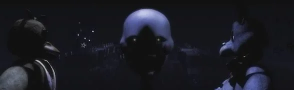
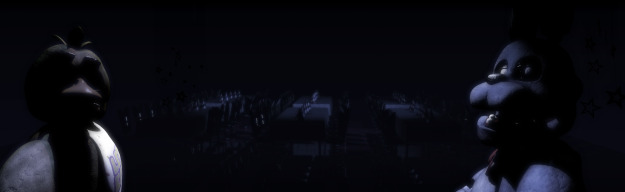
Então, muitos fãs começaram a pensar sobre quem poderia ser essa marionete misteriosa e macabra. Seria ela a vilã? Seria ela o assassino das crianças? Porque ela fez isso com Freddy e os outros animatrônicos? Muitas perguntas foram levantadas e quase nenhuma resposta deu sinal de vida.
Não só isso, mas também existiram muitas teorias de que ano estávamos e entre outras sobre quem é o cara do telefone.
E mesmo assim, as dúvidas não pararam até na quinta e na sexta noite nos depararmos com um urso dourado mais assustador que os outros, contendo uma mecânica diferente dos demais, porém simples.
Demais teorias
Na tela de game over (mais a frente), 'teorizava-se' que o homem no traje na verdade não éramos nós e sim o Phone Guy (homem do telefone). No entanto a teoria foi descartada pela pergunta de onde nosso corpo viria parar.
Na época que a maioria dos youtubers haviam 'zerado' o FNAF 1, teóricos acreditavam que o verdadeiro assassino pudesser ser o homem do telefone, mas nada foi confirmado e perdeu-se na linha revelada mais futuramente.
Muitos achavam que pelas falas nos dita durante as noites do jogo, que estávamos em 1987, por conta de um acidente com um guarda noturno. No entanto, essa teoria foi desmentida, pois essa data é apenas do segundo jogo, que você saberá mais á frente.
O Hall das Curiosidades
Tela Game Over; a tela game over representa o jogador colocado dentro de um traje do Freddy, pois segundo teorias, os animatrônicos te enxergam como um endoesqueleto.
Um endoesqueleto é o robô interno dos trajes, que os fazem se mover.
Essa teoria é confirmada a propósito. CENAS PERTURBADORAS!
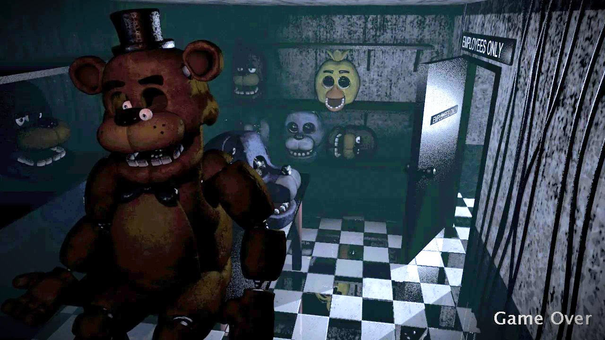
O maior medo de Scott Cawthon; Segundo o criador de FNAF, o primeiro animatrônico a ser criado foi Bonnie, oque deu à ele pesadelos terríveis, sendo então um de seus maiores medos.
Não tem nada haver com a história do jogo, é só um fato engraçado e antigo.
Os sons; Se você reparar bem, durante o jogo uma trilha sonora sinistra de arrepiar os pelos do corpo toca enquanto jogamos, sendo algumas tiradas de filmes antigos. Não somente as trilhas sonoras, mas os Jumpscares(sustos) dos robôs foram tirados de um filme de terror, mais especificamente em uma cena em que uma personagem grita.
Não tem nada haver com a história do jogo, mas foi interessante a criatividade. Confira:
Cuidado! O som é alto e pode causar desconforto.
FNAF 57: um jogo de fnaf do futuro; Em 2016, após 2 anos do lançamento do primeiro jogo de FNAF, em um 1 de abril, um canal do youtube SABINO 69 lançou um trailer de um possível Five Nights at Freddy's novo, o esquecido FNAF 57. Mais a frente esse jogo viraria parte de um dos projetos de Scott Cawthon, no entanto não da forma que foi mostrado originalmente, e sim em formato RPG.
O jogo em sí era um projeto de um fã, e nada foi confirmado exceto que teria uma referência futuramente por Scott. Confira no youtube:
Sparky The Dog; Em agosto de 2014, um espécie de HOAX foi criado por fãs do jogo. Sparky é um animatrônico secreto? Quem é ele?
Na realidade esse personagem foi apenas um tipo de easter egg falso feito por fãs e colocado em uma versão de website de FNAF1. Ele foi trazido dentro de um dos filmes de Five Nights at Freddy's como uma referência e easter egg.
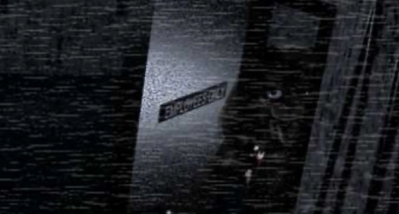
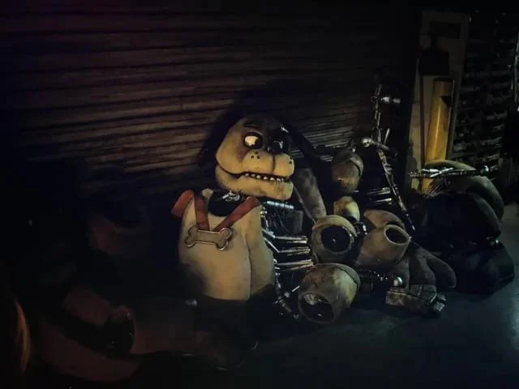
Cenas raras do jogo
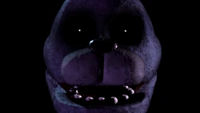
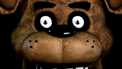
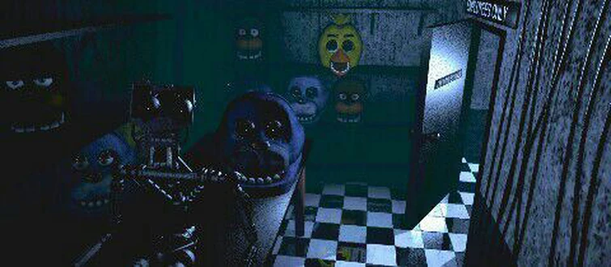
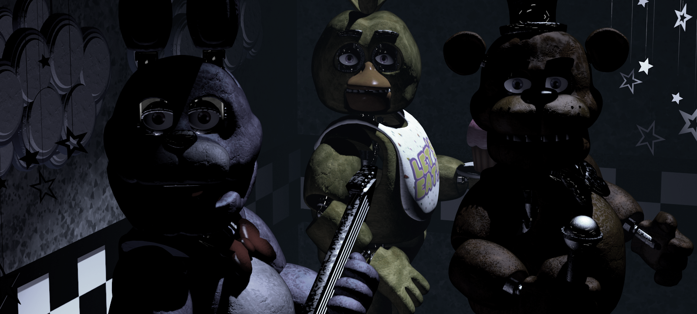
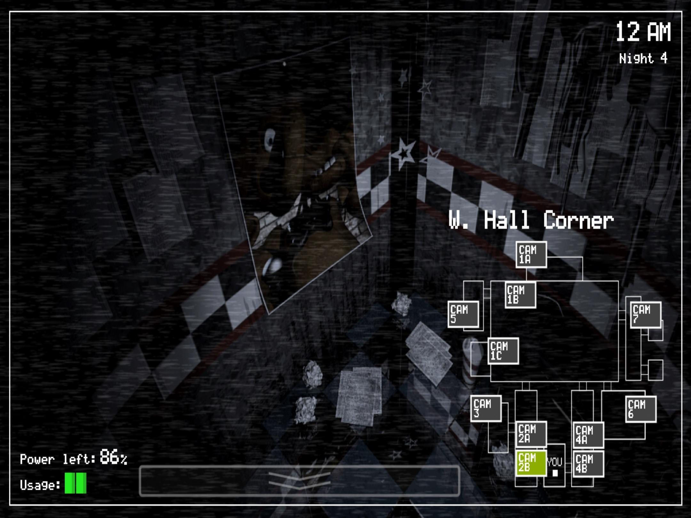
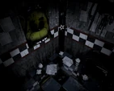
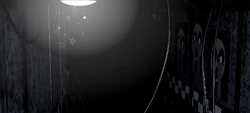
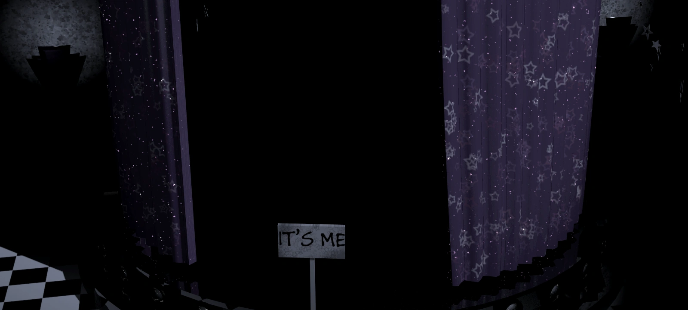
Essas são cenas raras que acontecem e aparecem conforme o jogo. São como easter eggs, só que você não descobre, eles vem até você.
Algumas dessas cenas vem com uma frase "It's me", traduzindo "Sou Eu", que mais para frente descobrimos de quem realmente é essa frase.